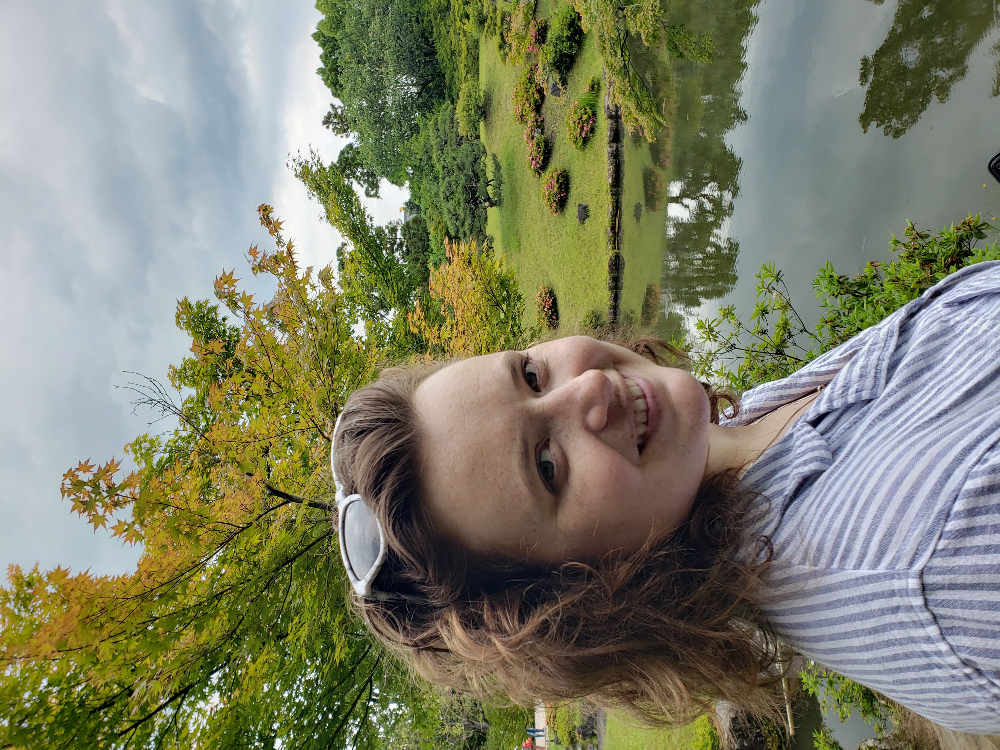
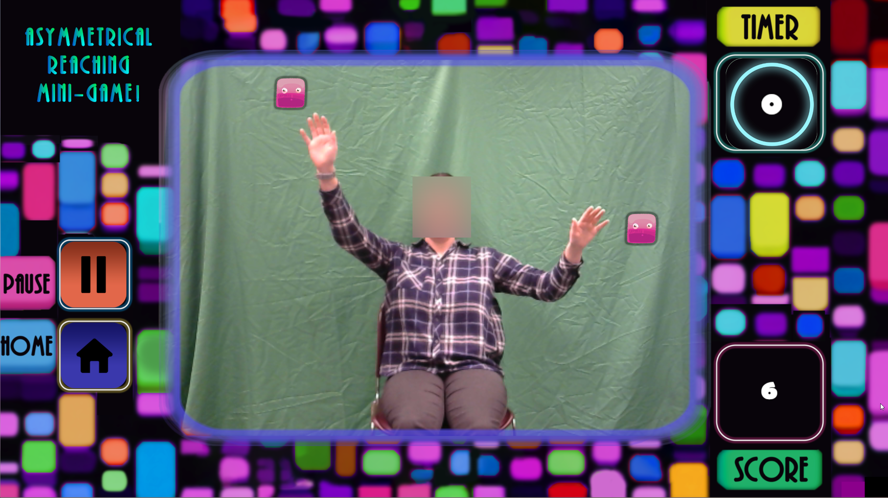
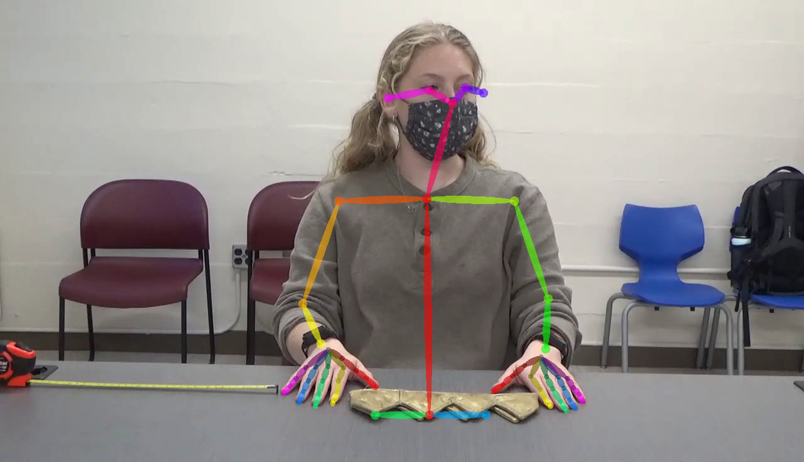
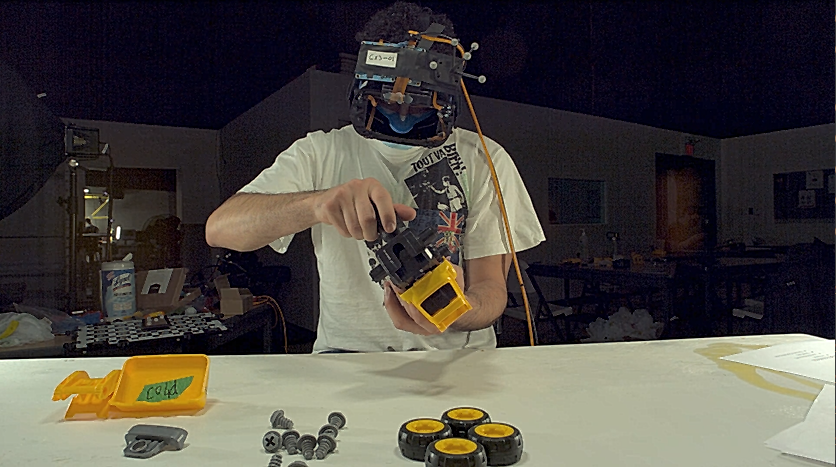
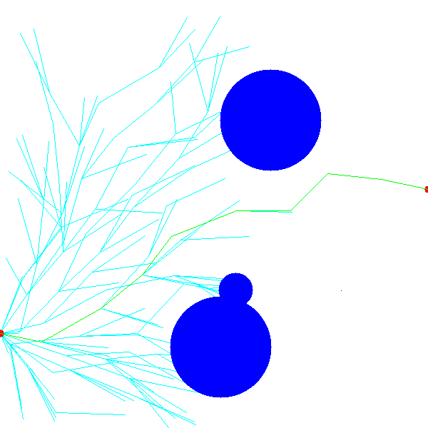
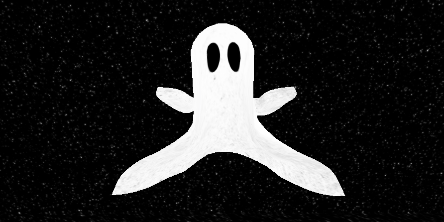
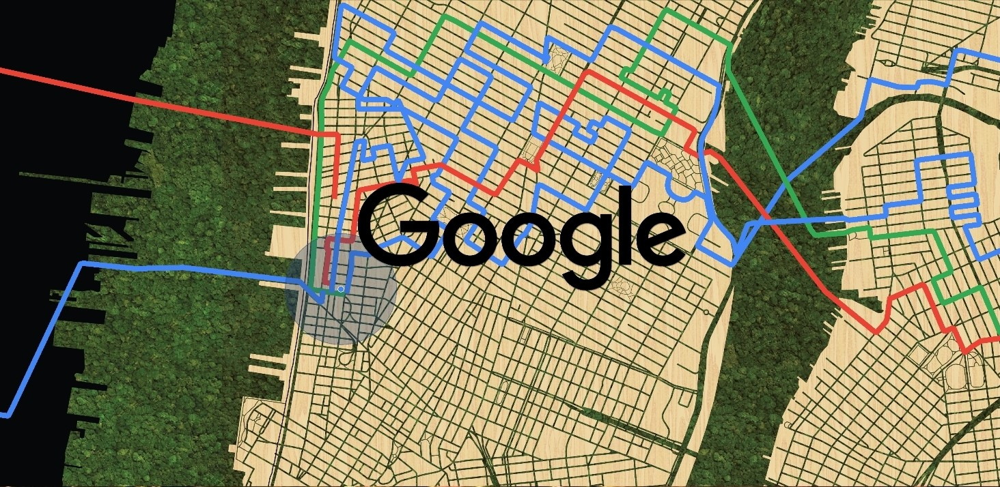
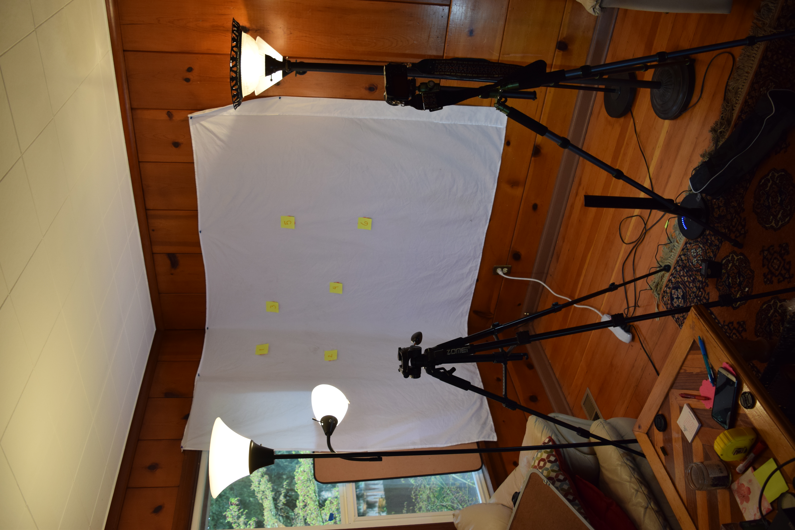
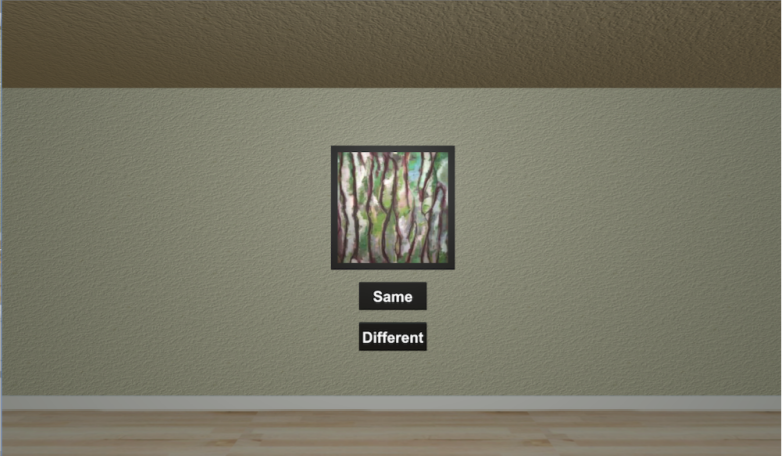

Hello! I am a senior PhD candidate at University of Minnesota in the department of Computer Science and Engineering. In my work, I explore algorithms for the capture, analysis, and simulation of natural movement. Whether the movement is from humans or other elements in the natural world, the computer vision, machine learning, motion planning, and graphics algorithms involved are interesting and beautiful. This research has applications for computer animation, autonomous vehicles, and assistive technologies.
Outside of academics, I am passionate about accessibility and disability activism, adventuring through the outdoors, embroidery and other crafts, high fantasy and other great literature, really good food, and my cat named Ada. I cannot wait to connect with you!
Upper-limb motion strategy discovery
3/2023 - present

TBD
Keywords: Python, C#, motion capture, MediaPipe, Unity, machine learning, unsupervised learning, clustering, PyTorch
Bilateral Movement Assessment Toolkit (BMAT)
9/2021 - present

TBD
Keywords: Python, motion capture, OpenPose, MediaPipe, user interface, PyShiny, clinical movement analysis, Cerebral Palsy
Generative Pre-Training for Atypical Upper-Limb Action Recognition
9/2022 - 10/2023

TBD
Keywords: Python, motion capture, OpenPose, machine learning, Pytorch, TCN, upper-limbs
Machine Learning for Optimizing Sampling Based Path Planning
7/2020 - 6/2021

As an exploration into sampling-based path planning algorithms as well as machine learning, I am working on this ongoing project to develop new ways of harnessing neural networks to increase sampling efficiency for sampling-based path planning methods. For this project, I implemented a Rapidly Exploring Random Tree (RRT) algorithm, as well as it's close optimal cousin RRT*, which I used to generate data for my neural network to learn and evaluate on. This data included ...
Keywords: machine learning, neural networks, motion planning, sampling distribution, rapidly exploring random tree, Python, Google Colab, PyTorch
Halloween Ghost Cloth Simulation
10/2020

For a school project designed to explore cloth simulation, my project partner and I created a movable/interactive ghost with a spooky cloth cover. The simulation starts with an empty starry sky. Once played, a flat sheet falls down and you see it deform around an invisible sphere to create the shape of the ghost. The edges fall and and the cloth stretches a bit. We also added a pretty high level of air resistance so the falling sheet has a floaty effect. While this makes it look less realistic as cloth, it makes it...
Keywords: cloth simulation, 3D graphics, C++, Visual Studio, OpenGL
Projection Mapped Moss Map
6/2019 - 1/2020

With my fantastic team at Downstream, we were able to build and install a lobby entry wall for the newly constructed 315 Hudson Google offices. This installation included 2 LED walls that flank projection on a physical map of Manhattan with preserved moss inlayed into the streets and waterways as well as an associated LED wall by the elevator banks that displays the same content. This native windows application was build in Downstream's custom framework, DS Cinder, which is extended from the open source ...
Keywords: projection mapping, simulation, installation, corporate, C++, Cinder, Visual Studio
Multiview 3D Triangulation from Scratch
8/2017 - 5/2018

I created a low-cost optical motion capture system which takes in two pieces of video footage of a distinct marker moving in 3D space (as well as information about the environment), and outputs two pieces of video footage with the marker tracked throughout. Additionally, this system provides a list of 3D vectors that contain either the actual 3D location of that marker in every frame or enough to further triangulate the best estimate. The input video footage must have the marker visible in every frame, not occluded by any object, and be taken at the same instant with two separate cameras, in different locations, watching the same scene. The environmental information required includes the 3D locations of four reference points, the 2D ...
Keywords: motion capture, computer vision, thesis, visual studio, c++, ffmpeg
Individual Calibration of Redirected Walking Thresholds
6/2017 - 11/2017

TBD
Keywords: virtual reality, redirected walking, rotation gain, HTC Vive, Unity, Visual Studio